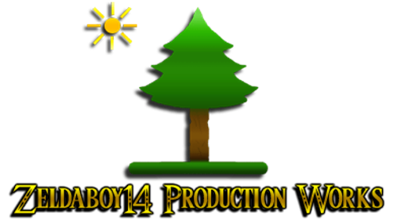
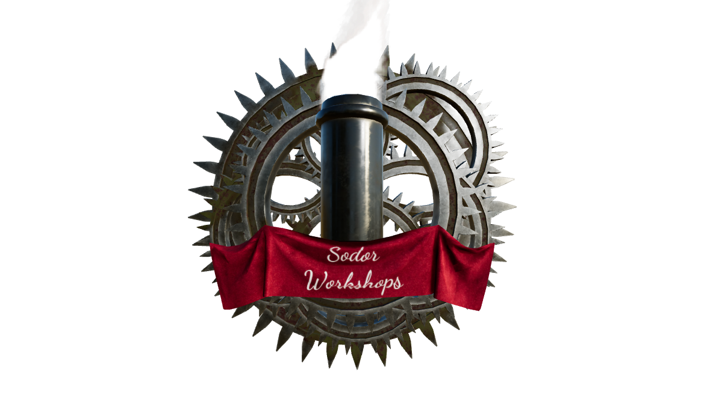
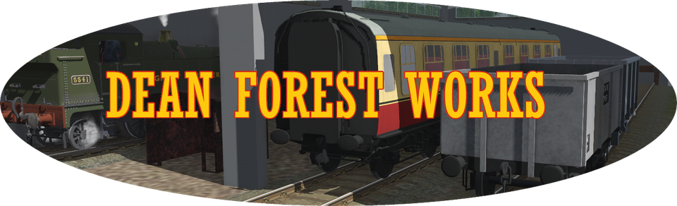
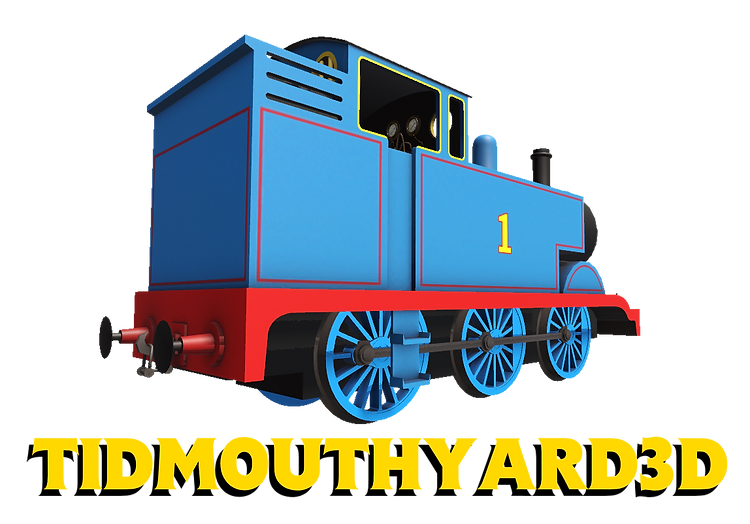
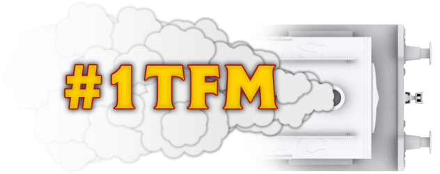

My Favorites!
Zeldaboy14 Production Works - Seperate from the norm of Trainz content
Big thanks to Zelda for helping me get the site up

Sodor Workshops - Host a good amount of Trainz 2012+ Content

Dean Forest Works - Make very good 2006 Si3D styled models

Tidmouth Yard 3D - Have all of the main NWR fleet in a really good standard

#1TFM - Good Rolling Stock
